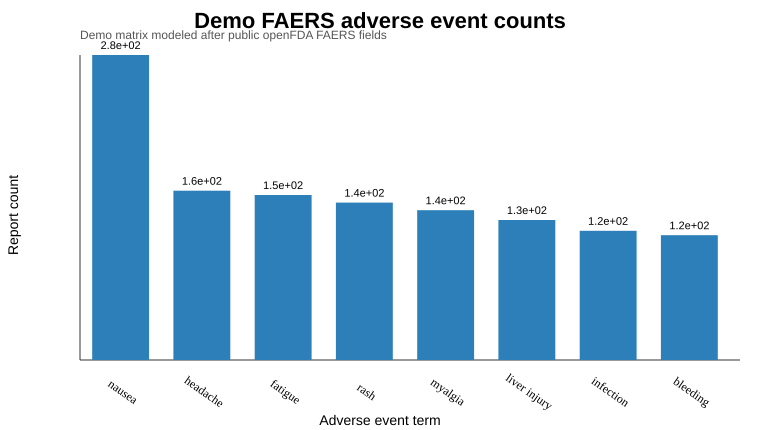

Bench to Bytes portfolio analysis report. Public data sources are named explicitly.
Public FAERS reaction counts can be normalized into searchable drug safety profiles, while preserving the warning that report counts are not incidence.
openFDA drug/event API, queried by medicinal product name for selected public drugs.
data/openfda_drug_event_counts.csvdata/openfda_event_matrix.csvoutputs/top_adverse_events.csvoutputs/drug_report_totals.csvThis is now a real public-data product scaffold. The scientific caveat is central: FAERS data are useful for signal exploration, not direct causal or incidence claims.
